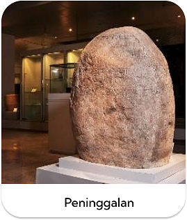
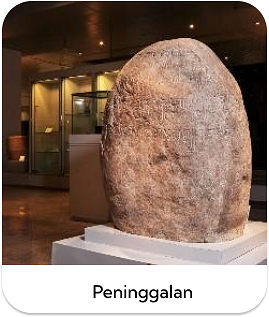

Welcome To FataruPedia
Website
website that contains information about the
Tarumanegara kingdom
Apa sih FataruPedia itu?
FataruPedia adalah web yang berisi informasi tentang kerajaan Tarumanegara.Di
FataruPedia kita bisa mengetahui informasi informasi apa saja yang berkaitan
dengan kerajaan Tarumanegara.Web ini bertujuan untuk menambah wawasan kita
sebagai anak bangsa tentang kerajaan yang dulu ada di indonesia salah satunya
kerajaan Tarumanegara.
Apa saja isi web FataruPedia?
 
